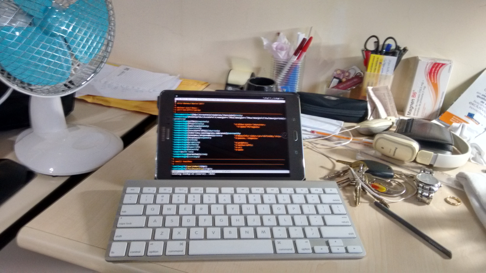
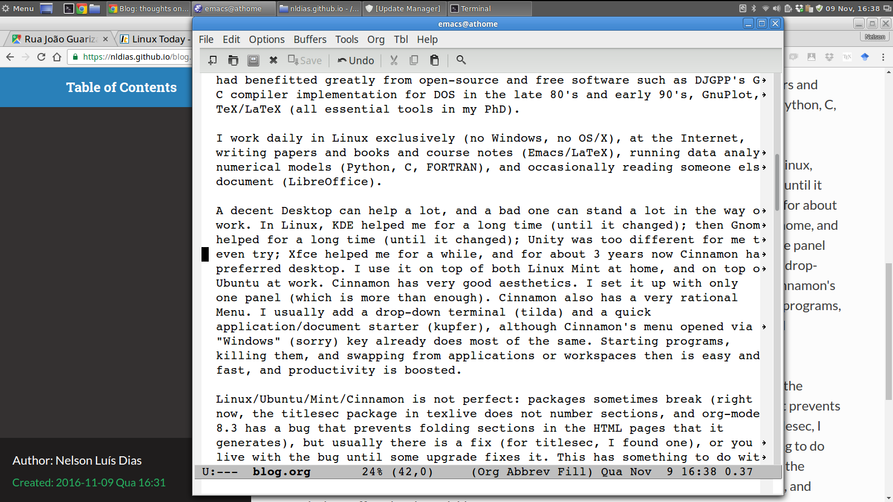

Thoughts on computing, teaching, and most anything else …
Table of Contents
- 1. 2018-03-11T03:44:08 – Long time, no see
- 2. 2017-06-23T14:46:52 – Fim de semestre
- 3. 2017-03-18T12:12:57 – LaTeX on the go in an Android Tablet (and much more)
- 4. 2017-03-16T19:28:07 – O tempo do fim das ilusões
- 5. 2017-03-01T12:09:55 – Prá tudo se acabar na 4a feira
- 6. 2017-01-28T10:45:21 – Installing miniconda in Linux and Windows
- 7. 2016-11-19T17:36:35 – Opinião
- 8. 2016-11-09T12:46:14 – Serious work with Linux and Cinnamon
- 9. 2016-11-05T19:45:22 – Setting up a Homepage
- 10. 2009-06-23T00:00:00 – Professores podem errar (mas quanto?)
- 11. 2009-03-20T00:00:00 – O esforço de pensar
- 12. 2009-03-12T00:00:00 – O distante passado recente dos computadores
- 13. 2008-08-06T00:00:00 – Jovens e Velhos
- 14. 2008-06-10T00:00:00 – O olhar hipnótico da serpente
- 15. 2008-06-01T00:00:00 – Faça da Internet uma amiga
- 16. 2008-05-17T00:00:00 – Ensino e Aprendizado são Diversão
- 17. 2008-04-08T00:00:00 Recuperando o Saber
- 18. 2008-03-25: Disciplina
This site is searchable. See HELP on the right (you may need to click around a few times until HELP shows up).
Os artigos deste Blog obedecerão à seguinte regra de conduta auto-imposta:
- Não haverá críticas nominais a ninguém. Se eu não gosto de você, pode estar certo(a) de que seu nome não aparecerá aqui criticado ou atacado em nenhum sentido.
The articles in this Blog will obey the following self-imposed rule of conduct:
- There will be no criticism against nominated persons. If I don't like you, you can rest assured that your name will not appear here under criticism or any kind of attack, in no sense whatsoever.
1 2018-03-11T03:44:08 – Long time, no see
Eu sei, foi tempo demais. Começo lentamente, dolorosamente, a colaborar em um plano científico de um grande projeto — um documento que explica para que serve o projeto, e que tipo de questões ele prentende responder. Uma honra! A ferramenta computacional escolhida foi um documento colaborativo usando google docs. Que é fantástico. Muito bom. Até o momento em que eu preciso inserir uma referência bibliográfica. Consegui, muito rápido (pesquise google docs bibliography no Google), mas não há (na versão gratuita do add-on que baixei) como incluir referências cruzadas.
Compare isso com LaTeX, que já no final dos anos 1980 possuía uma ferramenta muito completa, BibTeX, para incluir referências bibliográficas. Ou com Jabref ([[http://www.jabref.org]]), um gerenciador de bibliografias que utiliza o formato .bib de BibTeX, e você verá que 30 anos depois não foi possível produzir nada nem sequer parecido para uso generalizado.
Novamente, LaTeX é o campeão. Penso nos meus filhos: vai ser difícil convencer pessoas com menos de 30 anos de idade sobre isso. Exceto os meus orientados, que não têm, tristes deles, nenhuma opção…
2 2017-06-23T14:46:52 – Fim de semestre
Em sala, última prova do ano antes da final . Dos 22 alunos que começaram o semestre, há 16 fazendo a prova . Quase 1/3 dos alunos já desistiram.
Escrever pressupõe ter algo para dizer, e eu me pergunto o que tenho a dizer para esses 2/3: que estudem mais, ou que serão recompensados por seu esforço e por sua dedicação? Que minha disciplina é importante ou que pode haver imenso prazer no ato de aprender?
Sim, há muito para lhes dizer que poderia, quem sabe, ajudá-los muitíssimo na longa luta que têm pela frente, na construção de suas vidas.
Mas a ausência eloquente dos 6 que já desistiram, e o silêncio obrigatório (pois estão em prova) dos demais me emudecem também. Logo, começo a receber algumas provas de volta. Em silêncio.
O texto progride, portanto, rapidamente, para o vácuo, a falta de assunto. Para o silêncio entre desconhecidos, que é tão diferente do silêncio alegre, rico, cheio de harmonia que tantas vezes existe entre grandes amigos, ou entre amantes depois.
É isto! Afinal, onde estão nossos assuntos em comum, nossos mútuos interesses? Onde estão nossa paixão por nossa profissão, nossa curiosidade intelectual, nossa esperança de estarmos investindo em nosso futuro? Na formatura desses alunos, tenho certeza, essas palavras certamente serão ditas (com convicção?).
E é este o segredo de ensinar e aprender: querer ensinar, e querer aprender.
Mas hoje eles estão cansados. Foi um longo semestre; estão em silêncio; e nao me dirão se para eles valeu a pena ou não eu ter querido lhes ensinar algo.
3 2017-03-18T12:12:57 – LaTeX on the go in an Android Tablet (and much more)
A little more than a year ago, I decided that carrying a notebook and a slide projector (projectors are still big and heavy at my university) to the classroom was too hard. From my office to the classroom it is an uphill walk of approximately 1 km.
My initial objective was to have a device that displayed my pdf lecture notes (one of them now a book, but for the lack of an ISBN). There are many good Android applications that display pdf, and some research showed that an Android tablet can project on any screen via Google's Chromecast.
Therefore, I invested considerable money in buying a Samsung Galaxy Tab A (very light, 8-inch display book size), a cover/bookstand, the Chromecast, and a 64-G SD external card.
The arrangement works very well, and has been improving every semester. With Dropbox, whatever changes I make in my class notes are instantly available. My attendance list is an Excel (yes, forgive me Lord) spreadsheet that also runs in Android. All things considered, I am more organized with my lectures than ever; my back is not hurting from carrying almost 5 kg (I am 1.60 m tall, and weigh 54 kg) uphill three times a week; and I am overall a happier lecturer.
I also found out that the SD card was almost useless, because very few applications can use it (Microsoft's Office and Dropbox cannot). But the device is so light and at the same time powerful (email, browsing, office documents, decent text editor) that it was very tempting to think about also using it alone when attending conferences and away from home and office. This means leaving my slim ultrabook (a Lenovo Yoga 2) at home. It also means that instead of 6 hours maximum battery time, I would have perhaps 24 hours.
For that, a keyboard was needed. I started using an old bluetooth foldable keyboard that I bought in 2007 in the U.S., but it is too awkward to type comfortably. Then, when she moved out, my daughter bestowed me an Apple bluetooth keyboard that we had bought for her to use with an Ipad. Best present she ever gave me: the Tab A recognizes it and everything works fine. I also type a lot in Portuguese (my native language) and for that I need accents! When Android links to an external Bluetooth keyboard it does not seem to be very generous with that demand. EKH is a premium app that allowed me to configure dead keys in the Keyboard to a "US-International" layout. It cost a few bucks, but it is well worth it (and worked with the two keyboards that I tried).
But to do real work, I need Python, Maxima, Gnuplot, Emacs, and, most of all, I need LaTeX. This complicates matters a lot. Python, Gnuplot and Emacs come via a very nice app called Termux. Termux runs a bash shell and allows to install many Linux/Unix command-line utilities. Discovering Termux allowed me to show Python in action to my students, and gave me Emacs on my tablet (it runs in the terminal and if you really need to access the menu, which is still there, press F10).
However, as of this writing Termux does not have texlive (the name of the Linux package that makes LaTeX available) in its list of installable packages (nor does it have Maxima, but I would have lived without it). There are some Android LaTeX applications, and I even bought one of them, but none is flexible and good enough. It is not difficult to understand why LaTeX is missing as a native app for Android: it is huge (more than 1.5G), and Android internal storage is usually small (My Tab A has a 16G disk, and about 5 are used up by the Operating System). If only the external SD card could be used to install it.
The two missing pieces came together during last week. First, I found an app called GnuRoot Debian. There are others (GnuRoot Wheezy, GnuRoot, etc.), but after some trials this was what made me happiest. After installation, GnuRoot provides many more applications than Termux. These are actually (from what I can understand) Linux, not Android, native applications, only compiled for the kind of CPU that Tablets have. GnuRoot Debian installs (as the name promises) a very reasonable Debian distribution (even graphical applications are possible, but this is really not my priority, so I stuck to the command line). Lo and behold, under GnuRoot I can have texlive, and Maxima. Actually, I can have Emacs and Python as well, but the Debian installation is by default in English. Accents are a pain (I know I could change this in Linux, but I don't want to dig too deep into GnuRoot!), and for Emacs I cannot find out how to simulate the Meta Key from the Apple Keyboard (in Termux, I press shif-option).
Redundancy (Termux and GnuRoot) is important in real life, so I kept the two of them. I go to Termux for Emacs and Python (but I may use Python in GnuRoot as well, particularly if I ever need Miniconda in the tablet), and (for now) to GnuRoot for LaTeX and Maxima.
But for all this to be possible, and for internal disk space not to be a severe restriction, I wanted GnuRoot to be installed in the SD card. In the last week (or was it the week before the last?), the second missing piece came into place. Samsung finally allowed by Tab A to upgrade to Android 6.0 Marshmallow. In this version, you can make the external SD card "adoptable" (horrible name), meaning that it is seen by Android as a part of the internal storage. I tried it, only to find out in some Internet site that the Samsung Tablets cannot do it! Then, after more digging, I also found that if I put my Tablet in Developer mode and then used something called ADB, I could still pull the trick. To install ADB in linux, follow these instructions. Then, put the tablet in developer mode and enable usb debugging; finally, enable adoptable storage.
It was a long route, and (unfortunately) people less inclined to hacking may not pull the trick, but it shows how promising cheap and light computing with tablets is. Here is the summary: my Samsung Galaxy Tab A now has a linux sub-system called GnuRoot. I can see the files I create in this sub-system by going to what now is effectively only "internal memory" (but which actually includes the 64G SD card at some unseen mount point) and looking at the folder named (you guessed it) GNURoot. Therefore, whenever I connect to my computer via USB, I can copy and paste files in both directions. Whenever I come back from a trip, whatever documents and presentations I created in LaTeX can be backed up. I can also do it directly from the tablet using Dropbox. Very serious research work can be done in GnuRoot, as well, with Python, Gnuplot, Maxima, and if need be, FORTRAN, C, or Miniconda (for numba; Termux has numpy as well as GnuRoot).
There may still be some limitations. Microsoft Office and (most importantly) Dropbox still show in my tablet as installed in the internal storage. If I make too many Dropbox folders "offline" (locally resident), my internal storage may fill up. Therefore, I will still be careful not to bring too much data to live locally in Dropbox, and will also take a few other precautions because, after all, this is a tablet, not a computer. Android's file system is also complicated to understand when you navigate it, much differently from living in the simplicity of a Linux home. I don't care, because I will only use the Tab A for work on the go, and will always do this in a restricted mode: reading emails, fixing some LaTeX documents, opening some Word document sent by a less-illuminated creature, etc.. But this is so much more than I expected or thought possible when I bought the Tab A that I am really happy I did it.

Finally: all this was only possible because Android is, at heart, Linux, and although it is obscure and complicated so that users are kept relatively under control, clever and industrious open-source developers were able to give us Termux, GnuRoot, and similar stuff (thank you!). Indeed, we may be very close to the day when mixed operating systems will work relatively well side-by-side, like Android and Vanilla Debian Linux now do in my Tablet. Very important as well is the fact that solutions like mine are cheaper than a notebook (not in my case, but potentially, if you shop around). Here is the promise of more computing power for poor people, a not neglible factor in a country like Brazil. I hope to see it happen very soon.
4 2017-03-16T19:28:07 – O tempo do fim das ilusões
Por algum motivo, talvez alguma vantagem evolutiva, nós seres humanos somos atraídos por ilusões do fácil, do rápido, e do indolor. Desde sempre, nos vendem pirâmides para ficarmos ricos. Compramos (eu também comprei uma). Os políticos, é claro, nos vendem o paraíso. Compramos. E as agências de publicidade nos vendem tudo de que não precisamos: um novo carro, um novo computador, um novo apartamento, uma viagem para um lugar que não precisamos conhecer.
Compramos.
Ah sim: o governo nos vende loterias, esse imposto dos mais cruéis, porque quem compra um bilhete de loteria é justamente alguém que precisa muito do dinheiro.
Mas não me cabe lhe dizer, prezado leitor, prezada leitora, que você não deve jogar na mega-sena, ou que aquela viagem para um resort com tudo incluído (grátis?) talvez não seja a maneira mais sábia de usar seu sofrido dinheiro. Você, que me lê, sabe de tudo isso.
Gostaria entretanto de escrever sobre outra loteria/propaganda/ilusão que nos afeta tanto em Educação: a promessa de aprender brincando. A ilusão de que existe um "método" que ensina sem esforço, que turbina o desempenho dos alunos e, por que não, alivia a carga de trabalho do instrutor. Sim, eu já comprei doses moderadas dessa pirâmide.
Temos que fazê-lo, mesmo nós mais comedidos e racionais, se gostamos de ensinar. Se existe uma maneira melhor, temos que tentar. E tentamos, e tentamos.
Claro, existem facilitadores: livros bons, carteiras confortáveis, salas de aula arejadas. Boas bibliotecas. E sobretudo, tempo para nossos alunos estudarem, sem terem que se balançar em ônibus e trens por horas; sem terem que estudar à noite cansados após o trabalho; sem terem que assistir a aulas de 3 ou 4 horas de duração porque isso é conveniente para alguns professores, etc..
Tudo isso ajuda, mas não responde a uma pergunta impossível: "Como é possível aprender ou ensinar sem esforço?"
Não é. Tentamos sim, métodos e ideias, porque afinal se somos educadores queremos ensinar melhor e mais. Porém, depois das salas de aula reformadas, depois dos horários decentes de aulas e estudo, depois da biblioteca nova e das condições de estudar; depois de tudo o que é decentemente razoável e possível, se ainda assim o Paraíso não foi atingido, é porque…
É muito difícil aprender, assim como é muito difícil ensinar. Aprender e ensinar exigem trabalho, tempo, dedicação, persistência, honestidade, foco, suor, capacidade de lidar com a frustração de não conseguir superar os obstáculos. No processo, lemos e estudamos no ônibus; preparamos aulas à noite, até tarde; fazemos no quadro-negro ruim e com o giz de péssima qualidade o milagre da transmissão do conhecimento.
Somente aqueles entre nós que entendem que é preciso voltar, e voltar, e voltar; refazer, refazer, e refazer; melhorar sempre, trabalhar muito, não desistir nunca, chegamos ao Paraíso (relativo) em que alguém realmente ensina, e em que alguém realmente aprende.
Os demais continuam a comprar pirâmides, e a se banhar em ilusões, muitas vezes, a respeito de si próprios.
5 2017-03-01T12:09:55 – Prá tudo se acabar na 4a feira
O primeiro dia depois do Carnaval, esta 4a feira, 1o de março de 2017, amanheceu nublado em Curitiba. É impossível não sentir um pouco da tristeza deste dia. Não só acabou a festa, que talvez seja a maior do planeta, mas todas as obrigações, preocupações e chateações do ano que agora se inicia de facto vêm à mente. E para quem ensina e estuda, vai começar a escola.
O segredo talvez seja aceitar essa tristeza, enfrentá-la, e compreender que ela faz parte dos ritmos da vida. Para muitos cristãos, é o começo da Quaresma, tempo de recolhimento e moderação. Outros querem mais: desejam que haja mais festa, mais ócio, mais diversão. No Rio de Janeiro antigo, blocos de Carnaval eram proibidos na 4a feira de cinzas, ou seja: a sociedade impunha o fim da festa. Um bloco, o Chave de Ouro, desafiava a polícia, que tentava impedi-lo de sair na 4a feira. Isso durou até 1978 (https://pt.wikipedia.org/wiki/Chave_de_Ouro).
Lembro-me dos ratinhos de laboratório com seus centros de prazer cerebral conectados a dois botões, um para obterem comida, o outro para terem mais prazer, que se matam, incapazes de parar para comer. A história deve ser verdadeira, mas não importa: aqui, vale a força da figura de retórica. Somos, ou não, como os ratos de laboratório? Se nossa tristeza consiste em não resistir ao fim da festa, ela só vai se aprofundar. Mergulharemos nas trevas da impossibilidade da felicidade absoluta e da irresponsabilidade absoluta.
Parece melhor aceitar os ritmos da vida. Isso inclui aceitar um pouco da tristeza. Ficar triste, mas não desesperado diante da impossibilidade do prazer infinito. Ficar triste, sim, mas aceitar a inevitabilidade do tempo da Quaresma, do tempo de recolhimento, do reinício do trabalho. O novo tempo, mais triste e fechado, e mais frio, faz parte da vida. Precisamos dele também, para produzir e ganhar a vida. Para equilibrar o cérebro ora banhado de endorfinas e talvez mergulhado em dolorosa ressaca. Precisamos também dessa coisa sem-graça de acordar cedo, ir para o trabalho e a escola, voltar cansado para assistir às notícias do fim do dia na televisão, tomar banho, jantar e dormir. Em alguns dias, a tristeza passa, e o nosso cérebro entende que precisamos trabalhar para pagar nossa comida. Sentimos mesmo um orgulho justificado de sermos capazes do equilíbrio, de não sermos ratos de laboratório.
E para não terminar totalmente cinza, lembro que é com o dinheiro de nosso trabalho (e o produto de nosso estudo) que poderemos comprar as fantasias do próximo Carnaval. Feliz 2017.
6 2017-01-28T10:45:21 – Installing miniconda in Linux and Windows
Python is very popular, for good reason. Programming, debugging, and testing in Python is much faster than in older languages such as FORTRAN, Pascal, or
- For Engineers and Scientists, the downside is the fact that it is
interpreted, and therefore sometimes 100 \(\times\) slower than the aforementioned compiled languages.
There are two ways around Python's slugishness. One of them is numpy and the other is numba. Neither one comes in a default installation, and to have them both, free of trouble, you should use miniconda (https://conda.io/miniconda.html). So head to that link, and download the installer for your Operating System:
- In Linux, I install it locally below my home directory, at
/home/nldias/miniconda3. At the end of installation, in Linux, miniconda offers to add Anaconda to the PATH variable. DO NOT ACCEPT THAT, because it will create a conflict with your pre-installed Python in Linux.Not accepting miniconda to change your PATH will leave you with a miniconda installation that is unreachable via the command line. I don't mind, because I change my Python shebang to
#!/home/nldias/miniconda3/bin/python
This is all that is needed: whenever I execute a python script having the comment above as the first line, it runs the local miniconda installation. You still want numpy and numba, however. For that, you should:
cd ~/miniconda3/bin ./conda install numpy ./conda install numba
- In Windows, I install it locally below my home directory, at
C:\Users\IEUser\Miniconda3(I use Windows very seldom, always in a Virtual Machine inside Linux, and for that I use Microsoft's freely available Windows Virtual Machines). At the beginning of the installation, miniconda offers to add Anaconda to the PATH. ACCEPT THAT if miniconda is the only Python you have in Windows.Two more steps are needed in Windows, unfortunately:
- Make files with the
.PYextension executable, by going to Control Panel -> System and Security -> System -> Advanced Configurations, and editing the System Variable PATHEXT. The variable looks something like.COM;.EXE;.BAT;.CMD;.VBS;.VBE;.JS;.JSE;.WSF;.WSH;.MSC
You should change it to something like
.COM;.EXE;.BAT;.CMD;.VBS;.VBE;.JS;.JSE;.WSF;.WSH;.MSC;.PY
- Go to File Explorer, right-click on any
*.pyfile that you may have, choose Properties, and tell Windows to open the files with*.PYextension withC:\Users\IEUser\Miniconda3\python
That should do it.
You still want numpy and numba, however. For that, you should:
cd C:\Users\IEUser\Miniconda3 conda install numpy conda install numba
- Make files with the
By now, you should have miniconda running at the command prompt, and have numpy and numba available to you. Next time, I hope to come back with a few suggestions on how to use numpy and numba effectively (and without too much fuss).
7 2016-11-19T17:36:35 – Opinião
Ter opinião, posicionar-se. Ver, diante de cada fato da vida que se apresenta para nós, a necessidade de tomar atitude, tomar partido ou simplesmente sugerir encaminhamentos e soluções.
No Brasil, às vezes parece que ter opinião é crime. Falar o que se pensa é raro. Na maioria das vezes, diante de situações incômodas, o que eu vejo é o silêncio constrangido, ou risinhos nervosos, ou obviedades. Como está frio hoje!
Trata-se, claro, de táticas deliberadas, ainda que talvez inconscientes, de evitar o confronto. Com toda a violência crua do país: no crime, no trânsito, nas tragédias causadas por incompetência, nosso silêncio insistente em não confrontar nosso interlocutor permanece sendo talvez o último baluarte da decantada cordialidade do brasileiro.
Mas que cordialidade limitada, incompetente. Nao conseguimos conversar com os que se nos opõem. No conseguimos debater com civilidade. Daí muitas vezes, talvez, serem as culturas comparativamente mais atrasadas, mais violentas, e mais preconceituosas, também as relativamente mais cordiais: o Sul norte-americano mais cordial que Nova Iorque. E a gente ainda se escandaliza com o estilo direto e duro das culturas mais avançadas que a nossa.
Tenho esta ideia (e esta opinião): se nós pudéssemos debater abertamente nossos pontos de vista, defendê-los, mas se nós também pudéssemos fazer isso civilizadamente, sem medo de ofender (pois não há ofensa em si em ter ideias diferentes das do próximo), se ao menos nós pudéssemos, talvez o país avançasse mais rápido.
E estamos precisando tanto avançar.
8 2016-11-09T12:46:14 – Serious work with Linux and Cinnamon
I have been a Linux user for a long time, and even before that I had benefitted greatly from open-source and free software such as DJGPP's Gnu C compiler implementation for DOS in the late 80's and early 90's, GnuPlot, and TeX/LaTeX (all essential tools in my PhD).
I work daily in Linux exclusively (no Windows, no OS/X), at the Internet (Chrome), writing papers and books and course notes (Emacs/LaTeX), running data analysis or numerical models (Python, C, FORTRAN), and occasionally reading someone else's document (LibreOffice). [(Added: 2016-11-10T13:59:00) Of course, one can run any of these programs in Windows, or OS/X (I guess), but software is only a part of the road to productivity. Linux is superior in providing faster and simpler upgrades, in providing more security, and more privacy. Finally, it is superior in offering many choices for the Desktop that you will be using.]
A decent Desktop can help a lot, and a bad one can stand a lot in the way of work. In Linux, KDE helped me for a long time (until it changed); then Gnome helped for a long time (until it changed); Unity was too different for me to even try; Xfce helped me for a while, and for about 3 years now Cinnamon has been my preferred desktop. I use it on top of both Linux Mint at home, and on top of Ubuntu at work. Cinnamon has very good aesthetics. I set it up with only one panel (which is more than enough). Cinnamon also has a very rational Menu. I usually add a drop-down terminal (tilda) and a quick application/document starter (kupfer), although Cinnamon's menu opened via the "Windows" (sorry) key already does most of the same. Starting programs, killing them, and swapping from applications or workspaces then is easy and fast, and productivity is boosted.
Linux/Ubuntu/Mint/Cinnamon is not perfect: packages sometimes break (right now, the titlesec package in texlive does not number sections, and org-mode 8.3 has a bug that prevents folding sections in the HTML pages that it generates), but usually there is a fix (for titlesec, I found one), or you can live with the bug until some upgrade fixes it. This has something to do with the pace of open software development, and the distributed and open nature of the contributions. The same openess, on the other hand, contributes to bugs being found, and solutions offered, quite quickly.

Linux is also a somewhat lonely road. There are millions of fans and plenty of information on the Internet, but the guy next door is likely to only know about Windows, and not to understand at all the idea that another OS can be, well, better. This is the ordinary man or woman who writes everything, from shopping lists to scientific papers to books in Word, and sadly plots graphs and does data analysis in Excel.
It may sound snobish or arrogant –I will only conceed that I have strong opinions, though–, but there is consolation in knowing (from having used Windows many times in the past) that Linux is indeed better, and that the Linux way is a very good way.
9 2016-11-05T19:45:22 – Setting up a Homepage
It is painful not to be able to follow the pace of those who set up their homepages by snapping their fingers. But I got here: http://nldias.github.io is online as of today. The way I did it was:
- Using Emacs, and org-mode.
- Using github's http://github.io impressive, and free, offer of a homepage for everyone.
I may give you the detailed "how-to" later, or maybe not. But the fact is, I am in business, my pages don't look too bad (many thanks to all of those who contributed the .css files and other stuff that I resorted to when setting up this site), and this will ultimately be beneficial to those I work with, teach to, etc.. As the sky grows darker in gray, and the Saturday night sets in, I can only wish you all a good end of Weekend.
10 2009-06-23T00:00:00 – Professores podem errar (mas quanto?)
Professores podem errar, e engana-se quem pensa o contrário. É impossível em uma sequência de dez, vinte aulas, não cometer erros: interpretações incompletas, citações de memória que não são totalmente corretas, datas confundidas, etc..
Não só isso, nós chegamos em sala de aula vindos de nossas reuniões desgastantes (em geral a culpa é de nossos colegas professores), com pequenas ou grandes doenças na família, com pequenas ou grandes tragédias na vida. E mais ou menos como o palhaço do circo, ou o grande ou o pequeno artista, o professor tem que dar sua aula.
Para muitos alunos, enquanto que seus erros, esquecimentos, mau comportamento, etc.. são irrelevantes, os erros dos professores são motivo de júbilo, vingança ou de comentários maldosos. Estes alunos deveriam amadurecer a idéia de pesar os erros e acertos de seus professores, assim como nós pesamos os erros e os acertos de nossos alunos. A grande maioria dos professores o fazem com senso de dever e justiça.
Há no entanto todo o tipo de professor. Há o "grande professor" (ou professora): um sujeito com excepcional conhecimento e didática, que entusiasma e a quem é um prazer ouvir enquanto expõe seu assunto. Em geral, mas nem sempre, um grande professor é também um grande sujeito. Não há como ser muito diferente, porque para ser um grande professor é necessário ser também humilde, humano, abrangente e diligente.
Todos nós outros, professores, queremos ser um grande professor. Mas nem todos conseguimos. Há o "simplesmente professor", a grande maioria, a média que às vezes vai bem, mas às vezes mal e mal cumpre seu dever. É para este que existem livros-texto e calendários, para que ele também seja um pouco guiado. Todos nós devemos uma boa parte do que sabemos a este professor, não tão genial, ou não tão excepcional figura humana, mas que vai tocando o barco, superando suas limitações, e ensinando, pelo menos, o essencial.
Finalmente, há o mau professor. O professor reprovável. Aquele que está a serviço de tudo, menos de ensinar. Os há de todos os calibres intelectuais, porque para ser mau professor não é necessário ser ignorante de seu assunto, nem o amplo conhecimento garante-nos escapar da classificação. Revendo meus maus professores, identifico neles um traço comum: são cínicos em relação a seu papel, céticos do seu poder de ensinar, e céticos da capacidade de seus alunos aprenderem. Por que fazem tanto mal?
Bem simples: porque para aprender é preciso ter confiança de que este conhecimento que vem é sério, bem-intencionado, útil, e passado de boa fé. Tudo aquilo que um mau professor não faz.
11 2009-03-20T00:00:00 – O esforço de pensar
Na 4a feira, 2009-03-18, reuni-me com 3 alunos de pós-graduação para discutir um artigo que submetemos a uma revista, e que agora precisamos revisar à luz dos comentários de um revisor anônimo. Para quem não sabe, é assim que se faz, modernamente, ciência: submete-se os trabalhos a uma revista; o editor escolhe um ou mais revisores para analisar-lhe o mérito; os revisores fazem seus comentários e então os autores modificam (ou não) o artigo em resposta aos comentários. Cabe ao editor, e não aos revisores, a palavra final sobre aceitar ou não o trabalho.
No nosso caso, trata-se de um artigo relativamente simples, porém sobre matemática. Isto o torna quase que automaticamente não tão simples assim. Com a ajuda de meus alunos, comecei a traçar uma estratégia para a resposta, assim como comecei a pensar sobre como fazer as diversas modificações necessárias. De volta para a casa, foi impossível parar de trabalhar e pensar. Os rabiscos e esboços de equações e deduções duraram até as dez, mas os pensamentos me mantiveram aceso até pelo menos as duas da manhã. Durante o dia 19, escrevi os resultados que obtive até então, e os enviei para meus alunos conferirem. Às 15:00 h de 2008-03-19, peguei um resfriado.
Pensar um problema sistematicamente é um processo que drena uma quantidade considerável de energia. O problema precisa ser atacado de diversos ângulos, e de novo e novamente, até que em algum momento faz-se alguma luz. Dado um bom problema e um atacante determinado, é quase impossível que não surja alguma luz, mesmo que não seja uma solução muito boa, muito menos "A" solução.
O processo também tem seus custos: dores de cabeça, agitação, insônia, e uma quantidade considerável de frustração são efeitos colaterais comuns. São de se esperar, e de certa forma fazem parte da profissão. É como ser jogador de futebol e esperar lesões (algumas vezes muito dolorosas). Não é possível ser jogador de futebol e não levar umas pancadas. Também não é possível ser pesquisador — na verdade, não é possível ser nem mesmo aluno — sem esperar estas dores de cabeça, cansaço, frustrações e outros efeitos colaterais.
Havia na minha juventude uma ilusão desta atividade intelectual como algo puramente lúdico. E não se enganem, pois ela é lúdica. Existe uma imensa diversão em procurar e uma diversão maior ainda em descobrir — embora isto seja consideravelmente mais raro. Mas não é uma brincadeira, e não é para crianças.
Pesquisar é uma atividade profissional, que tem inclusive suas doenças de trabalho. E estudar também! Pensar custa um esforço imenso. Mas também nos dá grandes alegrias, tão grandes quanto a que deve ter um atacante ao fazer um gol-recompensa pelo seu esforço e aplicação. É mais ou menos assim que eu vejo o resultado do meu recente esforço, apesar do resfriado. E olha que eu nem sei se este artigo vai ser aceito.
12 2009-03-12T00:00:00 – O distante passado recente dos computadores
Segundo a Wikipedia, o primeiro compilador FORTRAN veio ao mundo em abril de 1957. FORTRAN é mais velho do que eu, que cheguei em junho de 1961. Nesta época, um monte de gente já estava usando a nova ferramenta para pesquisa e aplicações tecnológicas. Um ano depois, meu orientador de doutorado defendia o seu doutorado, mas ainda usando um computador analógico, essencialmente um bando de circuitos elétricos, para simular escoamentos subterrâneos.
Ao conversar com meus alunos de pós-graduação deste trimestre, na disciplina sobre computação que estou lecionando (veja o curso), descobri que muitos apenas ouviram falar de FORTRAN, mas não têm idéia da cronologia. Não sabem por exemplo quem veio antes: se FORTRAN, PASCAL ou C. No mundo dos computadores, portanto, o envelhecimento é acelerado. Já existe uma geração para a qual estas linguagens são "eternas", tão antigas que não vale a pena ficar tentando descobrir qual é a mais velha. É mais ou menos como ouvir falar das primeiras civilizações, no Egito e na Mesopotâmia: qual é a mais antiga?
Para o baú da história também vão todas estas fantásticas ferramentas de cálculo: tabelas de logaritmos, computadores analógicos, e todo o tipo de "computadores" mecânicos com os quais uma boa parte da civilização ocidental se ergueu. Não precisamos ser nostálgicos: eu mesmo jamais aprendi a usar uma régua de cálculo — coisa de que me arrependo hoje, mas compreendo o meu desprezo juvenil por ela.
Mas há algo que precisa ser preservado. Quando RAM e CPU eram caros e débeis, era preciso pensar exaustivamente um problema. Alguns livros desta época de transição, como o Handbook of Mathematical Functions de Abramowitz e Stegun, precisam ser conhecidos e estudados pelos novos estudantes. A escassez computacional deste passado aparentemente tão distante, e no entanto a poucas décadas de nosso tempo presente, forçou muitas idéias inteligentes. Eu me pergunto se a transformada rápida de Fourier ou Quicksort teriam tido tanta pressa em aparecer em um ambiente de "força bruta computacional".
E por fim: um aluno me trouxe uma solução de equação diferencial obtida por um pacote de processamento simbólico que está aparentemente errada. Ele afirma que o pacote "não erra nunca". Esta confiança cega na máquina e no "software" que nem começamos a entender não me parece muito boa. Sempre que posso, conto aos meus alunos que um dia, há muito tempo atrás, os homens calculavam com réguas de cálculo, dispositivos mecânicos, computadores analógicos, etc.. Conto isso porque quero que eles estudem a pré-história da computação. Lá, eles vão encontrar o que torna esta história de computadores tão fascinante: a inteligência dos homens e mulheres que os projetaram, construíram e os utilizam até hoje. Nós somos os atores principais deste filme.
13 2008-08-06T00:00:00 – Jovens e Velhos
(Ou a dialética do bom conflito de gerações)
Nas sociedades primitivas, a cultura absolutamente estática produz um tipo de relação entre as gerações que me fascina: existe um conjunto relativamente limitado de conhecimentos sobre o mundo, e quanto mais se vive, mais se sabe sobre este mundo. Até aí, nós também, mas eis que nestas sociedades (índios, aborígenes, etc.) o homem que envelhece sabe exatamente como se sentem os mais jovens, pois ele passou pelos mesmos processos, foi acostumado aos mesmos valores, etc.. Tudo é absolutamente igual, exceto que os mais velhos realmente sabem mais, simplesmente porque viveram mais.
Nas sociedades modernas que são herdeiras da cultura greco-romana, ou judaico-cristã (como queiram), o mundo começou a mudar cada vez mais rápido desde o ano 476, que é uma das datas possíveis para situar o fim do Império Romano. No nosso mundo moderno, os jovens de cada nova geração passam por experiências muito diferentes das dos seus pais e avós. Os mais velhos não sabem aquilo que os mais jovens sabem (isto é: estão presentemente vivenciando), e ficam consequentemente enfraquecidos. Se confrontarem os mais jovens com sua experiência e seu conhecimento, ou com seus valores, estarão arriscados a ouvirem que não sabem nada, porque o mundo mudou.
Mudou, de fato, e diga-se a bem da verdade que muitas vezes mudou para melhor. Só para dar os exemplos óbvios, nos últimos 50 anos nós assistimos, nas sociedades ocidentais, ao fim da opressão das mulheres, à mudança da percepção do racismo, que agora não é mais aceitável e pode mesmo (como no Brasil) ser motivo para processo criminal, etc.. Todos temos a tendência a nos acharmos bons e com razão, mas muita gente boa que tivesse nascido e crescido em sociedades mais machistas ou racistas do que a nossa ainda é estaria cometendo barbaridades. Foi porque gerações mais jovens desafiaram os erros das mais velhas que o mundo mudou (nestes casos) para melhor.
Isto me leva ao ponto central deste texto: embora após algumas gerações fique relativamente claro que era preciso mudar, e quais mudanças foram para melhor, isto nunca está claro no calor do conflito. Como pode você, mais velho (ou mais velha), discutir com esta sabedoria diferente, esta sabedoria de uma juventude que o confronta com novos valores, novos conceitos, que algumas vezes você tem até dificuldade de entender?
O fato é que nem todas as novidades são boas, e que ainda há uma quantidade considerável de saberes que os mais velhos possuem, e que são importantes para a formação dos mais jovens. Como distingui-los? Como separar o que é mudança desejável, saudável, ou seja, mudança para melhor, da confrontação pura e simples, e muitas vezes destruidora, que todos nós um pouco mais velhos já sentimos — e da qual nos ressentimos — em algumas situações?
Procuro a ajuda da história da ciência, e encontro alguns jovens reformadores, e o que eles tinham de bom em comum. Escolho Galileu, Kepler, Newton e Einstein, como poderia ter escolhido tantos outros. Todos foram reformadores, e todos se viram confrontados com um sistema de velhos que os impediu por muito tempo (talvez, no caso de Galileu, por toda a vida) de serem justamente reconhecidos. O que eles tinham em comum?
Eles tinham um grande apreço pela verdade. Se eu estou fazendo o papel de um (relativamente) velho guardião do saber-instituído, e me interpela um jovem extremamente preocupado com a verdade, acho que devo ouvir com atenção. Se as perguntas são sobre como as coisas realmente são, se questionam a justiça ou a lógica de certos pressupostos, eis um bom motivo para ouvir.
Eles trabalhavam muito. Não eram sabidos da boca para fora. Não diziam palavras de ordem. Trabalhavam muito, e tinham certa humildade quanto ao valor do seu trabalho, o valor de suas idéias. Não cobravam caro demais. Se me procura um jovem bastante trabalhador e que não se valoriza financeiramente muito além do que parece razoável, acho que tenho um motivo bom para ouvi-lo.
Eles eram corajosos, e defendiam causas justas. Galileu, vocês sabem, dizem que murmurou que no entanto ela se movia. Era o melhor que podia fazer sem ir para a fogueira. Newton, é bem verdade, não era exatamente um sujeito encantador. Criou muitas brigas, era introvertido e ciumento de suas idéias. Mas tudo indica que nunca roubou, e foi um competente administrador da Casa da Moeda inglesa. Kepler defendeu a mãe contra um processo de bruxaria. No fim conseguiu soltá-la, e pelo menos impediu que ela morresse queimada. Einstein teve a presciência de fugir do nazismo. Lutou contra o grande mal do século XX. Se eu vejo um jovem abraçando uma causa, devo me perguntar que causa é esta. Ele tem algum interesse imediato? Está fazendo isto porque acredita, ou já está vislumbrando algum ganho, financeiro ou político, ou de outro tipo, estritamente pessoal? Se a causa é realmente justa, e o esforço é realmente desinteressado, acho que devo ouvir com cuidado este jovem.
Deve haver mais critérios, mas estes 3 já devem bastar, pelo menos, para limpar a lista, separar o joio do trigo. É muito importante para um "velho" ter esta sensibilidade de perceber o valor de uma bossa nova, e aderir. Vinícius de Moraes, por exemplo, aderiu. E foi um dos fundadores da Bossa Nova.
Há porém a recíproca. Também é preciso ter a sensibilidade de manter em funcionamento o conjunto de valores e conhecimentos que, em última análise, nos proporcionaram a sociedade (ocidental) que nós temos hoje. Nas últimas décadas nós aqui no Brasil fomos nos tornando extraordinariamente permissivos com nossas novas gerações. Lembro-me de um slogan: "é proibido proibir". Nós, os jovens de então, e os velhos de hoje, aceitamos a proibição. Nos envergonhamos de intervir, de impor alguns limites, e fugimos em alguma medida à responsabilidade de formar os mais jovens.
Nenhuma sociedade do tipo da nossa, entretanto, pode se manter ou se desenvolver sem detentores de conhecimento, "sábios", se preferirem. E, igualzinho ao que acontece na tribo, no meio da selva amazônica ou do deserto australiano, conhecimento leva tempo para se construir. Para quem não é absolutamente genial, como os 4 jovens que citei acima, leva muitas décadas. Olhem ao redor: não são (em geral) os jovens de 30 anos de idade que conseguem formular políticas, iluminar caminhos, propor soluções efetivas. Os jovens podem sacudir o sistema, apontar os problemas, mas têm mais dificulade para resolvê-los. São os mais velhos de 50 ou 60 (ou 70!) que sabem o suficiente, que juntaram experiência e conhecimento com uma certa serenidade e uma grande certeza do caminho à frente que o fazem. Neste ponto, precisamos urgentemente voltar aos hábitos da tribo: respeitar e ouvir os mais velhos.
14 2008-06-10T00:00:00 – O olhar hipnótico da serpente
Há quem diga, mas deve ser um mito, que a serpente hipnotiza sua presa antes de dar o bote. A vítima fica imóvel, imobilizada, destinada a ser abocanhada nos próximos segundos, mas não foge. Não luta.
Para quem aprende, também há uma serpente, que nos hipnotiza e imobiliza, chamada ignorância. Ignorância no seu sentido estrito de desconhecimento, e não no sentido pejorativo de "pessoa ignorante".
Ignorante de um assunto, sou hipnotizado e paralisado por ele: as palavras desconhecidas intimidam, e parece impossível desvendá-lo. Sem saber por onde começar, fico à deriva, não consigo encontrar o caminho, e no fim entrego-me ao bote do destino, que me reprova, me elimina, e me diminui.
Uns poucos entre nós nascem com a habilidade de não se deixarem hipnotizar pela serpente da ignorância. Sabem que ela é só isto: uma espécie de cortina muito fina, uma cortina de fumaça, atrás da qual estão todos os conhecimentos, todos os caminhos, e toda a instrução que desejamos — ou não — possuir.
A cara terrível da serpente é o medo (este sim) que vem de dentro: de nos conhecermos em nossa limitação e ignorância, de aceitarmos que não somos tão inteligentes quanto Euler ou Newton, de aceitarmos que precisaremos usar nosso tempo precioso com muito trabalho até que tenhamos conseguido começar a entender algo.
Depois que saímos do transe, a serpente já não pode nos obstruir o caminho. Aos poucos vamos entendendo como juntar as peças do quebra-cabeças; aos poucos, palavras muito complicadas e ameaçadoras começam a sê-lo bem menos (não consigo me esquecer da repulsa que sentia sempre que ouvia ou lia a palavra baroclinicity — até o dia em que abri uns dois ou três livros, li com cuidado os parágrafos que tinha pulado quase inconscientemente por medo ou tédio ou preguiça, e finalmente a conquistei)
Peça a peça, o quebra-cabeças é montado, o problema se desmancha, e a serpente se evapora, posto que por mais feia que seja, é isto mesmo: fumaça.
Muitos anos depois, rimos de nós mesmos, do medo que sentíamos destes monstros que nos assolavam a imaginação de estudantes. Mas, para o estudante-em-construção, a serpente é muito real. E é muito difícil convencê-lo, ou convencê-la, do quanto o seu cérebro racional é mais capaz do que o seu medo.
Se eu fosse mais crente, rezaria para São Jorge (sábia Umbanda!): é preciso pedir sua ajuda para matar a serpente (sei: ele matou o dragão, mas são todos répteis afinal) que nos paralisa e impede de conhecer. Ela não pode, jamais, vencer. Só nos resta, como São Jorge, Santo Guerreiro, combater.
15 2008-06-01T00:00:00 – Faça da Internet uma amiga
Tanto quanto eu sei, foi no século XVIII que se procurou fazer pela primeira vez uma Enciclopédia. A tentativa deu nome a um grupo de savants: Enciclopedistes. A primeira enciclopédia nunca ficou pronta, mas hoje nós temos várias on-line, e nunca prontas em um sentido totalmente diferente: nunca prontas porque sempre disponíveis para adições. É claro que eu estou falando, basicamente, da Wikipédia. no Lemma, nós estamos usando a mesma 'máquina' — a MediaWiki — para divulgarmos nossas atividades didáticas e de pesquisa.
Com MediaWiki, é possível editar conteúdos com rapidez e segurança. Neste dia muito frio de inverno, eu progredi consideravelmente no planejamento de minha nova disciplina de pós-graduação: TQ-857 Monitoramento da Qualidade do Ar.
É possível adicionar imagens, textos em pdf, e manter uma página atualizada com um mínimo de conhecimento especializado em Internet. Meus alunos podem acessar a página da disciplina e ficar a par de notas recentes, material didático, planejamento, controle acadêmico, etc.. Pela primeira vez, eu estou também postando exercícios na página, de forma que os alunos poderão (se eu não for demasiadamente lento) estudar à frente da disciplina.
Antes que me entendam como mais um arauto das tecnologias de informação e da automação do aprendizado: nada disto significa uma diminuição do papel do professor: o ensino por excelência continua a ser o produto da interação direta professor-aluno. O que muda é a qualidade da interface: menos tempo perdido nas tarefas administrativas, e mais tempo para ensinar e aprender. Existe também, é preciso confessar, um efeito de marketing: quem vê uma página bem organizada de uma disciplina, a lista de assuntos abordados, a forma de avaliação, etc., talvez se motive mais para se inscrever, e aprender.
Esta é minha esperança: que o lado bom da Internet atraia a atenção para, democratize, e estimule, também, o conhecimento acadêmico: há algo mais do que fofocas e abobrinhas na rede.
16 2008-05-17T00:00:00 – Ensino e Aprendizado são Diversão
Nunca consigo formular um bom motivo para alguém estudar: por que você deveria estudar? Porque isto é uma garantia de segurança financeira? Idealmente sim, mas não necessariamente. Porque estudar é tão divertido quanto festar? Nem todos pensam assim.
A resposta é mais profunda, e é por isso (talvez) que nunca consigo formulá-la: a resposta provavelmente exige mais tempo do que se dispõe para um convencimento rápido e fulminante do interlocutor, geralmente um aluno(a).
Em primeiro lugar, nós estudamos a história de nossos antepassados. Nós estudamos, quase que literalmente, o passado. Nós o estudamos para entendermos por que estamos aqui, de onde viemos, etc.. E isto não se resume ao estudo da disciplina História: tudo vem do passado, e temos esta necessidade embutida no nosso código genético de re-visitá-lo. Portanto, nós estudamos para nos conectarmos com os que vieram antes, e para manter uma certa corrente de conhecimento viva.
Em segundo (e provavelmente último) lugar, nós estudamos porque por algum motivo o descobrimento nos dá prazer. Não é certamente muito difícil conjecturar o tipo de vantagem competitiva que uma espécie tem ao ser mais inquisitiva, e mais criativa, que as demais. Não estamos aqui por sermos mais fortes que elefantes, ou mais velozes que leopardos. Estamos aqui porque pensamos mais, e melhor, do que eles.
Ao longo do tempo, estes pensamentos foram nos dando mais e mais prazer. A alegria de descobrir se instalou no comportamento dos bebês, na maçã para a professora, nos prêmios para os melhores cientistas. Nós somos uma civilização que celebra o saber, obviamente, porque se edificou sobre o conhecimento.
Existe portanto um elemento lúdico na aquisição do conhecimento, um elemento prazeiroso. Mas ele está longe de ser a caricatura barata de um professor que faz a turma rir, rir, rir às gargalhadas: do professor-showman, daquele que faz tudo fácil, "prático", indolor. Aqueles que tornam tudo muito fácil, muito barato, muito simples, não estão transmitindo conhecimento: estão vendendo a ilusão de que transmitem conhecimento. É claro, há muitos que compram.
Não há uma saída fácil para o dilema imposto pelo conhecimento: é preciso esforço para obtê-lo. Mais especificamente: não há saída: só é possível obter conhecimento às custas de esforço.
E ainda assim, nós aprendemos: instrumentos musicais, esportes, danças, línguas estrangeiras, literaturas, ciências. A capacidade de aprender instrumentalizou a nossa espécie até o ponto de nos tornar senhores do mundo. Mas ao fazê-lo, de alguma forma, ela também nos libertou. Libertou-nos do conhecimento-instrumento, do conhecimento-meio. Tendo nós nos tornado senhores da Terra, pudemos pela primeira vez (talvez) vislumbrar uma outra coisa: o conhecimento-fim.
O conhecimento, não como um meio de alcançar algo mais, dinheiro, poder ou o que seja; o conhecimento como um fim a ser alcançado, como uma pintura para admirar, ou uma peça musical para ouvir. Cada vez que entro em uma sala de aula para ensinar, eis o desejo de que meus alunos estejam à procura do conhecimento-fim. Não porque eu seja um bom músico, mas porque é boa a música.
Mas há um longo caminho até convencê-los de que não se aprende como um meio de chegar, onde quer que seja: no melhor dos mundos aprende-se porque esta é uma das coisas mais divertidas, mais prazeirosas, do mundo.
17 2008-04-08T00:00:00 Recuperando o Saber
Enquanto o ensino médio continua em sua queda livre, a Universidade quer aumentar a sua eficiência, diminuir as desistências, reduzir as suas taxas de retenção. Enquanto a cada ano o conhecimento absoluto dos alunos que ingressam diminui, nós vamos seguindo em nosso auto-engano, mantendo os nomes das disciplinas e fingindo que ainda conseguimos ensinar o mesmo conteúdo.
Mesmo que tentemos (e eu tento), nossos alunos têm cada vez menos base, e portanto aprendem cada vez menos. A situação não é muito diferente na pós-graduação. Nós podemos fazer pouco no universo de cada sala de aula, na tentativa de recuperar os alunos individualmente, caso a caso, encorajando-os a estudar (e é assim que eu faço); mas poderíamos fazer muito mais se tivéssemos visão estratégica, e pensamento institucional:
A entrada na Universidade deveria ser por Setor, e não por curso. Os alunos precisam de um ciclo básico para amadurecer suas opções profissionais. A entrada em um Curso específico não deveria ser automática, mas competitva (por exemplo, com base no IRA — índice de rendimento acumulado — de cada aluno).
Os alunos que entram com notas baixas em Matemática, Física e Química deveriam passar pelo menos um semestre em "recuperação", cursando Cálculo Zero, Física Zero, Química Zero, etc. para obter a base de conhecimentos que não possuem, sem prejuízo do tempo posteriormente disponível para sua formatura.
Deveriam existir mecanismos para dar diplomas alternativos aos alunos que cursam 2, 3 anos e depois "desistem"; eles deveriam sair com algum diploma que reconhecesse o conhecimento que adquiriram, embora um tal diploma não possa ser evidentemente um bacharelado pleno.
Nós precisamos reconhecer o que os alunos realmente sabem, e encaminhá-los para a aquisição do conhecimento necessário. Não é possível queimar etapas: quem não possui a base necessária, terá muita dificuldade em prosseguir nos estudos.
Uma das conseqüências mais danosas do ensino fraco é dar aos alunos que são suas vítimas a ilusão de que sabem alguma coisa. Fornecer-lhes conceitos errados, ou negar-lhes conhecimento fundamental. Estes alunos saem em sua maioria felizes com seus diplomas e suas becas, pensando que "sabem" e espalhando sua falta de conhecimento pela sociedade a fora.
O que nos salva? É que alguns saem inconformados, mordidos de curiosidade, com a sensação de que não sabem alguma coisa que deveriam saber. Saem pelo mundo, correm atrás do conhecimento, e se redimem. Mas nós poderíamos ajudar muitos mais, se deixássemos de viver na fantasia e no auto-engano, e encarássemos a realidade de nossa ignorância.
18 2008-03-25: Disciplina
Hoje de manhã, na CBN, Cláudio Moura e Castro deu uma entrevista sobre a qualidade do ensino fundamental brasileiro. Tocou na ferida, comentou que este ensino ainda é muito fraco. As causas? Pouca ênfase no ensino em sala de aula, no uso de livros-texto, e em conhecimentos básicos e fundamentais (o exemplo dele: quantos professores aprenderam, na Faculdade de Educação, a ensinar a regra de três?)
Mais: que se perdeu o valor da autoridade em sala de aula (notem bem: não é autoritarismo). Que os 10 melhores colégios de ensino médio brasileiros todos têm disciplinas rígidas. E que os próprios alunos reclamam que a bagunça e a conversa dos outros os impedem de aprender.
Minha filha de apenas 11 anos queixa-se da mesma coisa.
Deveria ser normal esperar salas de aula tranqüilas, com professores e alunos concentrados em ensinar e aprender, e utilizar bem o seu tempo. Procuro fazer isto, todos os dias, com meus alunos. Tenho certeza de que o resultado é uma sensível melhora da qualidade do aprendizado. Resta denunciar os alunos baderneiros, e os professores (e demais educadores) condescendentes e coniventes: eles estão destruindo o futuro.